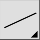
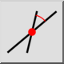

Werkzeugleiste / Symbol:


Menü: Zeichnen > Linie > Relativer Winkel
Tastenkürzel: L, R
Kommandos: linerelativeangle | lr
Konstruiert eine Linie mit einem relativen Winkel zu einem bestehenden Objekt. Das andere Objekt kann eine Linie oder ein Kreis oder Kreisbogen sein. Linien mit einem relativen Winkel von 0 zu einem Kreis oder Kreisbogen sind Tangenten, Linien mit einem relativen Winkel von 90 Grad sind orthogonal zum Basisobjekt.